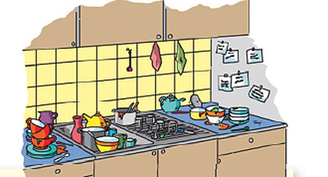

Übung 1: Wie stellen sich diese Bewohner eines Mietshauses ihr Traumhaus oder ihre Traumwohnung vor?Citește interviurile și alege răspunsul corect la fiecare întrebare. La primul interviu, întrebarea a) e deja rezolvată ca exemplu.
Übung 2: Chaos in der WG – Bringen Sie die Zettel in Ordnung (1)Veronika, Peter și Barbara locuiesc împreună. Peretele din bucătărie e panoul lor de mesaje. Textele sunt scrise fără spații: separă cuvintele și scrie corect fiecare propoziție. Prima propoziție e dată ca exemplu. Punctuația și majusculele nu contează la punctaj, dar scrie-le.

Übung 3: Chaos in der WG – Bringen Sie die Zettel in Ordnung (2)În biletul 3 lipsește prima literă din fiecare cuvânt, în biletul 4 lipsesc vocalele. Scrie fiecare propoziție completă. Începutul fiecărui bilet e dat ca exemplu.
Übung 4: Chaos in der WG – Zettel 5 und 6 und 6Cuvintele din paranteză au silabele sau literele amestecate. Scrie cuvântul corect în spațiu. «angerufen» și «dreimal» sunt exemplele.